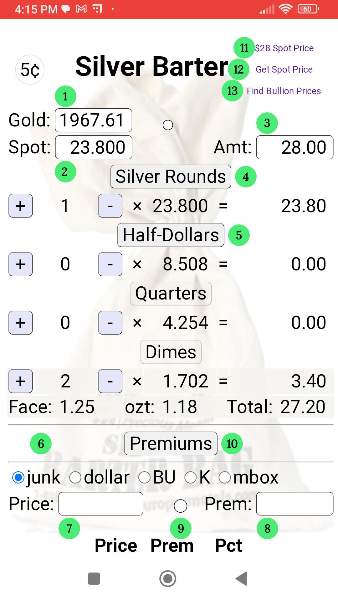

The Silver Barter webapp has two sections to help with bartering for goods and calculating premiums when buying junk" silver, gold and bullion.
1. Enter gold spot price here.
2. Enter silver spot price here.
3. Enter price of goods for sell that you want to barter for.
4. Toggle off "Silver Rounds" if you don't have any.
5. Toggle off "Half-Dollars" if you don't have any.
6. Select the Precious Metal that you want to calculate the premium on.
Junk: Pre-65 half-dollars, quarters and dimes. $1 face value.
Dollar: Morgans and Peace dollars.
BU: Bullion 1-oz rounds & bars, Maples Leafs, American Eagles, etc.
K: Kilo bars.
mbox: Monster box (500 oz).
7. Enter the quoted prices for the selected precious metal.
The premium will be displayed.
8. Enter the desired premium percent.
The price to pay will be displayed.
9. Toggle premiums for gold instead of silver.
10. Toggle "Price Prem Pct" table display.
11. Set silver spot price to $28 per oz.
Note: Quarters are worth $5 and dimes are worth $2!
12. The first time you click on this link, it takes you to www.goldapi.io. If you sign-up for a "free" api key and paste it into the Silver Spot Price input box ②, then the next time you click this link it will populate both the gold and silver spot price fields for you. The api key looks like "goldapi-xxxxxxxxxxxxx-io". You get 30 quotes per month.
13. A link to the "$100 Face-Value 90% Silver Coins" page on the FindBullionPrices.com website. Be careful buying the cheapest bag that it is not full of "Bent / Holed / Damaged / No date" coins.